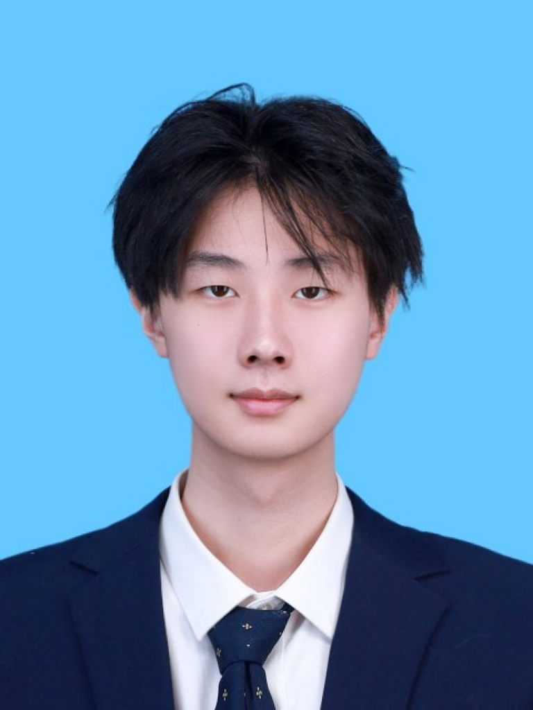

Juao Fan
Undergraduate Student in Data Science
BNU-HKBU United International College
Email:
biejingaoguai@gmail.com

About Me
I am currently an undergraduate student majoring in Data Science at BNU-HKBU
United International College. My research interests include Natural Language
Processing, Machine Learning, Deep Learning, Healthcare Data Analysis, and
Music Generation Models. I have worked as a research assistant on projects
involving language model evaluation, domain-specific model reproduction,
benchmark construction, drug–drug interaction analysis, and generative music models.
Education
BSc in Data Science
BNU-HKBU United International College, 2022 – Present
-
Courses: C Programming, Linear Algebra, Discrete Structures,
Object-Oriented Programming, Data Structures and Algorithms,
Database Systems, Regression Analysis, Data Mining, Machine Learning,
Neural Networks and Deep Learning, Natural Language Processing,
Computer Vision and Pattern Recognition, Computer and Network Security,
Partial Differential Equations, Real Analysis, Complex Analysis.
Bao'an Middle School
2019 – 2022
Research Experience
Research Assistant (NLP)
BNU-HKBU UIC · July 2024 – Sept 2024
- Conducted research on bidirectional encoders; second author of a paper submitted to FLLM 2024.
- Reproduced SciBERT and performed fine-tuning on the MIMIC-IV clinical dataset.
Research Assistant (LLMs & AI for Science)
BNU-HKBU UIC · March 2025 – Present
- Developing a benchmark for latent semantic recognition in large language models (details temporarily withheld; target venue JCST, B-tier).
- Performed API-based evaluations on models including Claude-instant-v1, RWKV-world-7B, ChatGLM-130B, Wenxin Yiyan (v2.0.4), and 360 Brain (4.0).
- Reproduced mambaDrug and mambaHealth; conducted pharmacological analysis on drug–drug interactions (target: NeurIPS Workshop).
- Studied music generation models; reproduced PDMX and explored generative modeling for music.
Skills
- Programming: Python, C
- ML/DL: PyTorch, TensorFlow, scikit-learn
- Data: SQL, database systems, data preprocessing
- Languages: Chinese (Native), English
Publications
Details will be updated after acceptance (FLLM 2024, JCST submission, NeurIPS WS submissions, etc.).